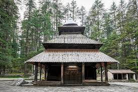
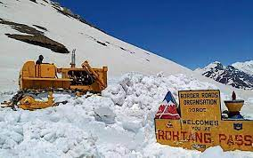
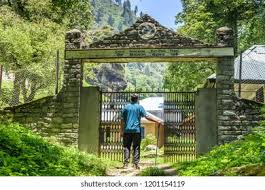
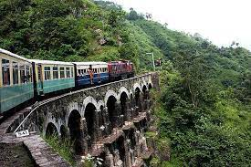
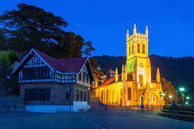
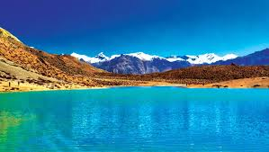
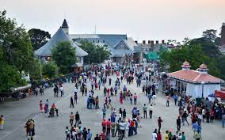
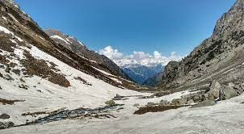
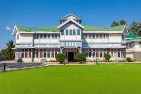

Hadimba Temple Manali
Hadimba Temple, which was constructed in the 16th century, is one of the best places to visit in Manali and is located amid a beautiful deodar forest on top of a hill in Manali. The temple holds great significance for the locals and also the tourists who frequently visit the pilgrim spot to seek blessings from Goddess Hadimba. The temple is dedicated to the Goddess Hadimba who was also the wife of the strongest of the Pandava brothers, Bhima. According to the Hindu mythology, the giantess Hadimba meditated in this region as an apology for her sins. So, she was given the position of Goddess by the most powerful Goddess Durga, whose 10 centimeter footprint is preserved at the entrance of the temple.

Rohtang Pass
At an elevation of 13,054 ft, Rohtang Pass serves as the gateway to Lahaul and Spiti valleys in Himachal Pradesh. About 53 km from Manali, it connects Kullu valley with Lahaul and Spiti which in turn provide access to Leh. Besides Lahaul and Spiti, Rohtang Pass also serves as the gateway to Pangi and the valley of Leh. Like the Zojila Pass, Rohtang also serves as the gateway to Ladakh.
The name Rohtang means ‘ground of corpses’ due to the number of people who lost their lives trying to cross it. The Rohtang Pass is on the Pir Panjal Mountain Range of the Himalayas. The Rohtang Pass is a natural divide between the humid Kullu Valley, which has predominantly Hindu culture and the arid, high altitude Lahaul and Spiti Valleys which mainly has Buddhists.
Known for its scenic beauty, Rohtang Pass holds strategic importance for India. The Pass offers beautiful sights of glaciers, peaks, Lahaul Valley and the Chandra River. The twin peaks of Geypan are also visible from Rohtang.

The Great Himalayan National Park
The Great Himalayan National Park Conservation Area is located in the western part of the Himalayan Mountains in the northern Indian State of Himachal Pradesh. The 90,540 ha property includes the upper mountain glacial and snow melt water source origins of the westerly flowing Jiwa Nal, Sainj and Tirthan Rivers and the north-westerly flowing Parvati River which are all headwater tributaries to the River Beas and subsequently, the Indus River. The Great Himalayan National Park Conservation Area is at the core of a larger area of surrounding protected areas which form an island of undisturbed environments in the greater Western Himalayan landscape.

Kalka Shimla Railway
Kalka Shimla Toy Train is one of the best modes of transport to explore the rich colonial history of the hill station along with an array of fine-dining restaurants, bars and shops lined up at the edge of the Mall Road and the Ridge.
A must-try ride for holidaymakers of all ages, the Kalka Shimla Toy Train passes through more than 100 tunnels and 800 bridges to cover some 60 miles. Built in 1903, this UNESCO World Heritage Site takes you back in time with a display of awe-inspiring landscapes.
The scenery you get to see throughout the journey is simply breathtaking! And the best part is that the train makes you forget everything about the destination, thus giving you a lifetime opportunity to travel with a different feeling.

Christ Church, Shimla
Christ Church is one the oldest churches in North India and was built by the British in 1857 to serve the large Anglican British community in the area. The majestic appearance of the church and its stunning location makes it a prime attraction in Shimla. The church has stained glass windows, which represents faith, hope, charity, fortitude, patience, and humanity. It is one of the long lasting legacies of British rule in India and also Shimla's most popular landmark. The church building is constructed in the Neo-Gothic style of architecture and anyone visiting Shimla should spend some time in this glorious structure.

Dal Lake
Dal Lake is a small lake near the village of Tota Rani in Kangra district of Himachal Pradesh. A picture perfect location with a calm and peaceful environment, Dal Lake Dharamshala is a mid altitude lake situated 1,775 metres above sea level. Other than just sitting and experiencing the serenity of the place, you can also enjoy boating here during some parts of the year. Moreover, you will find plenty of fishes in this lake. On the banks of the Dal Lake, there is a small sacred place with a shrine dedicated to Lord Shiva. You can witness the famous Dal Fair on the banks of this lake in the month of September every year when this place is flocked with tourists from various parts of the world. A number of devotees from Gaddi tribe take dips in the holy water of this lake to worship Lord Shiva, you will surely be able to experience liveliness during this time!A beautiful lake tucked in the hills, Dal Lake should definitely be on your itinerary if you are visiting Dharamshala to enjoy the simplicity of nature.

Mall Road
The Mall Road in Shimla, located in the heart of the town, is the main street that is lined up with a myriad of restaurants, clubs, banks, shops, post offices and tourist offices. At the same time, the place boasts of the other exciting attractions that it houses, such as the Scandal Point and Kali Bari Temple. One of the busiest and more commercial areas of Shimla till date, this stretch is a mini-world in itself. The Shimla Mall Road is the one stretch, that truly celebrates the spirit of the hilltown, its tourist rush and valleys and hills covered with houses and hotels. The charm and beauty of the Mall Road can be enjoyed by groups of friends, families and honeymooners alike.

Deo Tibba
Deo Tibba Base Camp trek, also known as the Chota Chandratal trek is one of the most beautiful treks in the Manali region of Himachal Pradesh. The trail of this trek is highly varied and is home to diverse flora and fauna. Mt. Deo Tibba is visible through the entire trail of the trek. Other peaks like Indrasan and the glaciers of Jagatsukh and Deo Tibba are also visible. The maximum altitude gained during Deo Tibba is 14,698 ft (approximately). Best time to do Deo Tibba base camp is between May to October. Stay on this page for more information like Deo Tibba base camp itinerary, route map, temperature chart, photos, videos, and reviews. Scroll down to read Deo Tibba Base Camp blogs.

Himanchal State Museum
The Himachal State Museum is located on the Shimla Mall Road and has unique collectables like ancient coins, paintings and other handicraft items collected from all over the state and country, the aesthetics of which are influenced by the Pahari form of art. One of the major highlights is the library housing around 10,000 books, magazines and journals. The Himachal State Museum is often visited by art and history lovers.
The museum also has a doll gallery which has several bride and groom dolls among many others which are admired by all visitors. Some archeological artefacts are also found at the Himachal State Museum which includes stone images from the 8th century.